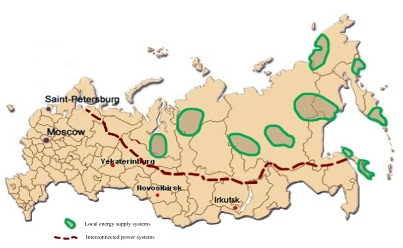

The continuous increase of power transfer combined with the need for high reliability of the energy supply requires a new philosophy for the planning and operation of complex power systems. In recent years some blackouts have occurred in different countries, including Russia, which explicitly show the new challenges to the reliable power system operation.
In the scope of the Mega Grant 220 № 11.G34.31.0044 (Project Baikal) the authors have developed a modern laboratory complex at the National Research Irkutsk State Technical University working in close cooperation with RAS and Siemens for investigation of Smart Grid Technology. The wide use of reliable communication techniques will make it possible to operate the power system reliably and economically close to its limit. The use of new intelligent techniques in the operation and protection of power systems make the new, smart operation schema more realistic (e.g. see Fig. 1).
